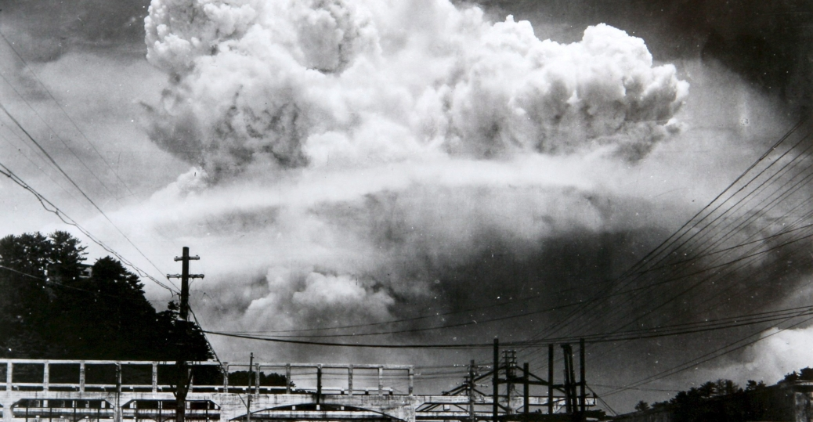

Bombardarile de la Hiroshima si Nagasaki
Bombardamentele atomice de la Hiroshima si Nagasaki au constat în doua atacuri nucleare implicand aruncarea a doua bombe atomice, produse de Statele Unite ale Americii, la sfarsitul celui de-al doilea razboi mondial, asupra a doua orase din Japonia, Hiroshima si Nagasaki. În timpul aruncarii celor doua bombe atomice, desi razboiul din Europa se terminase prin capitularea neconditionata a Germaniei, Japonia si Statele Unite ale Americii se aflau înca în stare de razboi. La 6 august 1945 bomba atomica cunoscuta ca "Little Boy" a fost aruncata deasupra orasului Hiroshima, iar trei zile mai tarziu, la 9 august 1945, cea de-a doua bomba atomica, cunoscuta ca "Fat Man", a fost detonata deasupra orasului Nagasaki.
Bombele atomice Little Boy si Fat Man

Little Boy ("Baietelul") a fost numele de cod al primei bombe atomice utilizata într-un conflict armat , care a lovit în dimineata zilei de 6 august 1945, orasul japonez Hiroshima. Bomba a fost lansata de un bombardier B-29 Superfortress pilotat de Colonelul Paul Tibbets de la baza aeriana 393d Bomb Squadron, Missouri Statele Unite.
Motive pentru efectuarea bombardamentelor

Cele doua arme atomice au fost arme de soc si teroare. Avantajul enorm al acestor arme nu a fost militar (SUA dispuneau doar de cateva) ci politic. Din punct de vedere militar, Statele Unite ar fi castigat putin prin distrugerea a doua orase japoneze. Dar din punct de vedere civil, Japonia avea sa piarda mult. Noutatea adusa de armele nucleare a fost nu distrugerea la scara larga (care s-ar fi putut realiza si cu arme conventionale în cantitatea necesara, ci faptul ca armele nucleare comprima distrugerea catastrofica într-o perioada de timp foarte scurta schimba dramatic politica razboiului, motivatiile oamenilor cu putere de decizie si capacitatea de a reflecta în timp ce razboiul se desfasoara.
Harry S. Truman- Presedintele care a ordonat bombardarile
Harry S. Truman (n. 8 mai 1884,Lamar,Missouri, SUA – d. 26 decembrie 1972, Kansas City, SUA )a fost al 33-lea presedinte al Statelor Unite ale Americii (1945–1953). În calitate de vicepresedinte ales în 1944 împreuna cu presedintele Franklin D. Roosevelt, Truman a devenit presedinte la 12 aprilie 1945, cand Roosevelt a murit dupa cateva luni în care sanatatea sa s-a deteriorat.În timpul presedintiei lui Truman, Statele Unite au încheiat cu succes participarea la al Doilea Razboi Mondial; imediat dupa conflict, tensiunile cu Uniunea Sovietica au escaladat, iar perioada a marcat începutul Razboiului Rece.
Surse